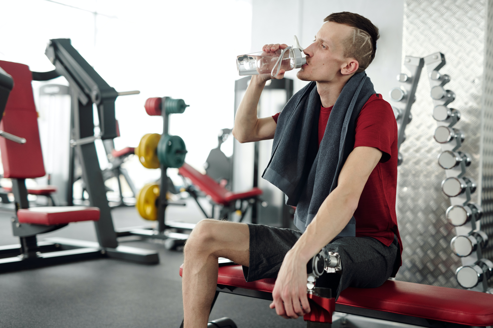

Your Friendly Gym Buddy: Tips for Beginners to Crush Their Fitness Goals
 Welcome, gym beginners! Embarking on a fitness journey is an exciting and
transformative
experience. To make your time at the gym enjoyable and effective, we're here to be your
friendly gym buddy. Whether you're looking to sculpt your physique, boost your energy
levels, or simply improve your well-being, these additional tips will empower you to make
the most out of your gym sessions.
Welcome, gym beginners! Embarking on a fitness journey is an exciting and
transformative
experience. To make your time at the gym enjoyable and effective, we're here to be your
friendly gym buddy. Whether you're looking to sculpt your physique, boost your energy
levels, or simply improve your well-being, these additional tips will empower you to make
the most out of your gym sessions.
1. Listen to Your Body
Your body is a remarkable guide, so learn to listen to its signals. Pay attention to any discomfort or pain and make adjustments accordingly. It's essential to differentiate between muscle fatigue and injury. If in doubt, consult a fitness professional or healthcare provider for guidance.
2. Stay Consistent
Consistency is key when it comes to achieving your fitness goals. Make a commitment to yourself and establish a regular workout schedule that you can stick to. Consistency builds habits and helps you progress steadily towards your desired outcomes.
3. Always Stay Positive and Be Kind to Yourself
Fitness is a lifelong journey, and there will be ups and downs along the way. Embrace a positive mindset and focus on the improvements you're making, no matter how small. Be kind to yourself, practice self-compassion, and celebrate every step forward.
4. Use Proper Gym Etiquette
Respect the gym environment and other gym-goers by practicing proper gym etiquette. Clean up after yourself, re-rack weights, and share equipment when necessary. Avoid hogging machines or benches and be mindful of others' personal space. Creating a positive gym atmosphere benefits everyone.
5. Incorporate Functional Training
In addition to traditional weightlifting and cardio exercises, consider incorporating functional training into your routine. Functional exercises mimic movements you perform in daily life and can help improve your overall strength, stability, and flexibility. Examples include squats, lunges, planks, and kettlebell swings.
6. Stay Hydrated and Fuel Up
 Hydration is crucial for optimal performance. Drink water before, during, and after your workouts to replenish fluids lost through sweat. Additionally, eat a balanced meal or snack containing protein and carbohydrates within an hour or two of your workout to support muscle recovery.
7. Don't Neglect Mobility and Flexibility
Incorporate mobility and flexibility exercises into your routine to enhance your range of motion and prevent injuries. Stretching, foam rolling, and incorporating exercises like yoga or Pilates can improve your flexibility and promote better overall movement patterns.
8. Have Fun and Switch Up Your Playlist
Music can be a powerful motivator during your workouts. Create energizing playlists that get you in the right mindset and keep you moving. Don't be afraid to update your playlist regularly to keep things fresh and exciting.
9. Track Your Progress
Tracking your progress is not only motivating, but it also helps you see how far you've come. Take measurements, progress photos, and regularly assess your strength and endurance levels. Seeing tangible evidence of your progress will boost your confidence and drive you to continue pushing forward.
10. Embrace Restorative Practices
Incorporate restorative practices into your routine to aid in recovery and reduce muscle soreness. This can include activities like foam rolling, stretching, yoga, or even scheduling regular massages. Taking care of your body and allowing it to recover properly will help you perform better in the long run.
11. Embrace Restorative Practices
Incorporate restorative practices into your routine to aid in recovery and reduce muscle soreness. This can include activities like foam rolling, stretching, yoga, or even scheduling regular massages. Taking care of your body and allowing it to recover properly will help you perform better in the long run.
11. Enjoy the Journey
Remember, fitness is not just about reaching a destination—it's about embracing the journey and enjoying the process. Embrace the challenges, celebrate your successes, and make fitness a lifelong pursuit of health and well-being.
Conclusion
With these tips, you're well-equipped to begin your gym journey with confidence and enthusiasm. Remember, every step you take in the gym is a step towards a healthier, stronger, and happier you. Stay consistent, stay positive, and most importantly, enjoy the rewarding experience of transforming your body and mind. You've got this!